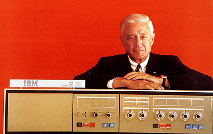

Thomas John Watson Sr. (February 17, 1874 to June 19, 1956) was an American businessman who served as the chairman and CEO of IBM. He oversaw the company's growth into an international force from 1914 to 1956. Watson developed IBM's management style and corporate culture from John Henry Patterson's training at NCR. He turned the company into a highly effective selling organization, based largely on punched card tabulating machines. A leading self-made industrialist,[4] he was one of the richest men of his time and was called the world's greatest salesman when he died in 1956.
Thomas J. Watson was born in Campbell, New York, the fifth child and only son of Thomas and Jane Fulton White Watson. His four older siblings were Jennie, Effie, Loua, and Emma. His father farmed and owned a modest lumber business located near Painted Post, a few miles west of Corning, in the Southern Tier region of New York. Thomas worked on the family farm in East Campbell, New York and attended the District School Number Five in the late 1870s. As Watson entered his teen years he attended Addison Academy In Addison, New York.
Having given up his first job—teaching—after just one day, Watson took a year's course in accounting and business at the Miller School of Commerce in Elmira, New York. He left the school in 1891, taking a job at $6 a week as bookkeeper for Clarence Risley's Market in Painted Post. One year later he joined a traveling salesman, George Cornwell, peddling organs and pianos around the farms for William Bronson's local hardware store, Watson's first sales job. When Cornwell left, Watson continued alone, earning $10 per week. After two years of this life, he realized he would be earning $70 per week if he were on a commission. His indignation on making this discovery was such that he quit and moved from his familiar surroundings to the relative metropolis of Buffalo.
| Born | February 17, 1874 |
| Died | June 19, 1956 (aged 82) |
| Occupation | Chairman and CEO of IBM |
| Spouse | Jeanette M. Kittredge |